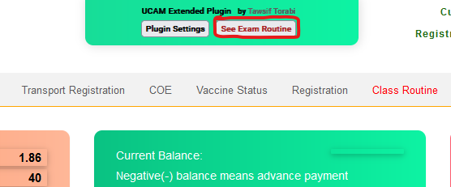
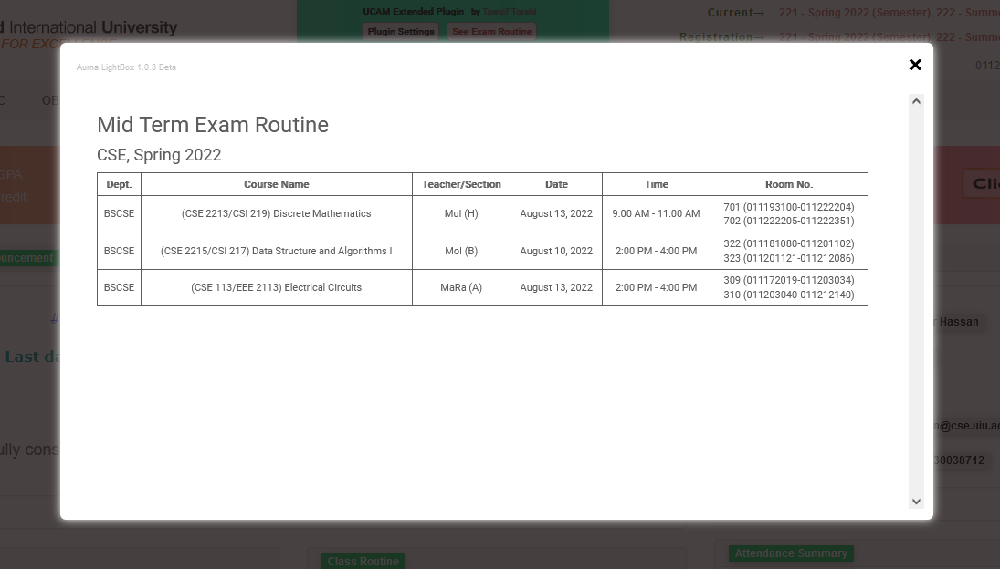
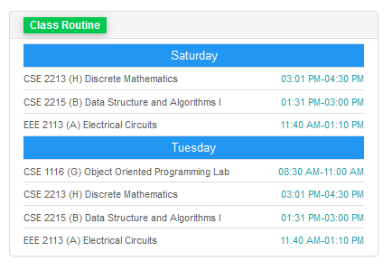
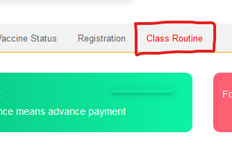

Tired of using the old UCAM? I'm too. 😣 I just don't get the point why I can't see a simple exam routine on UCAM! And what is wrong with the routine on the homepage? Who wants to see their course code on the routine? Just show the course names 😑 So I wrote a Userscript with Javascript to add in those features. 🧐 I made a Web Extension too, Unfortunately only available for Mozilla Firefox, Sorry Chrome users 😥 because chrome asked me for $5 and I don't even have a card to pay. So you know... But If you use chrome, you can use the Userscript version. Click on button to get guided.
Install Userscript Add to Chrome Add to Firefox|
Sorry! Only available for EEE,BBA and CSE Undergrad program till now! I couldn't find any other else from other disciplines to co-operate with. It can show the Mid and Final Exam Routine in the UCAM Portal. It uses JSON to grab the routine from the github repository. I will parse the Routine Excel file from the UIU Notices and convert it to JSON format and will upload it to github repository. This plugin will parse the JSON file when it's available and filters out the routine for the users. This feature might not work If the routine on the homepage of UCAM is not available or not parsed by the plugin. To avert this problem, you need to load the UCAM homepage once with the Routines are on. Once they are loaded, the plugin will cache them in. I don't know who developed this website without any json and API callbacks. |
  |
|
The previous class routine on the homepage was Meh! 😒 Who want to see course code instead of course names? So I added a feature to add Course names along with the course codes. It looks cool tho! And It's toggled, you can turn this feature on or off. |
 |
|
Why click multiple button to see a previous routine? Enable the option from the Plugin Settings and have a Class Routine shortcut button on the homepage. |
 |
Turning on this feature will force the Class Routine page to load the current trimester routine You can toggle this function on or off.